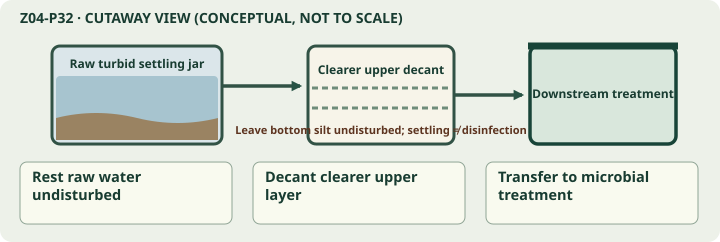

Z04-P32 · Water · Adapted historical material
Match gravity settling time and decanting to turbid water
Allow heavy silt and clay to drop out cleanly before pouring clearer raw water into a filter or boiling pot.
When it applies · Muddy, storm-roiled or silty raw water that has passed chemical and algal-bloom screening.
Equipment · Wide, stable raw settling vessel, clean raw dipper or pour lip and separate downstream treatment equipment.

Actions
- Fill the raw settling container and set it undisturbed on level ground in shade so coarse sand and silt sink toward the bottom.[W08, W24]
- Gently decant or ladle the clearer upper layer into the treatment vessel without tilting up the bottom sludge layer.[W08, W24, ED]
- Keep the settling container and ladle strictly on the raw side and follow with full microbial treatment (boiling, certified filtration plus disinfection, or verified UV once clear).[W08, W02, W04, W11]
Failure recognition · Agitating the settled jar while pouring, carrying heavy grit into a fine filter, or drinking decanted water without microbial treatment.[W08, W24]
Verify · Decanted water shows visibly reduced sediment while raw sludge stays behind and downstream microbial treatment is clearly staged.[W08, ED]
Stop or change course · If fine suspended clay will not settle enough for UV or filtration, switch to boiling after cloth straining or locate a clearer acceptable source.[W08, W02, W11]
Evidence and editorial notes
- W02 · CDC · How to Make Water Safe in an Emergency (2024-09-19)
- Section: Boil > Steps for boiling water · Conditions: Microbiologically suspect water with acceptable chemical source; portable heat and safe vessel
Support: Clarify cloudy water first. Rolling boil for one minute; above 6,500 feet for three minutes. Cool and cover in sanitized containers.
Limitations: Does not remove dissolved metals, nitrates, fuel, or cyanotoxins. · Conflicting evidence: Older Track B B009 omitted the 6,500 ft threshold; CDC threshold governs.
Editorial note: Require explicit timer verification after rolling boil starts. · Specialist reviewer: Drinking-water safety and public health
Primary source · checked 2026-11-24 - W04 · CDC · Water Treatment Options When Hiking, Camping, or Traveling (current web edition)
- Section: Water treatment methods > Filter and disinfect · Conditions: Untreated backcountry water; suitable devices and directions
Support: Filter capability varies. Filtering then disinfecting addresses gaps left by typical portable filters. Follow both manufacturers' directions.
Limitations: Effectiveness depends on pore rating, cartridge integrity, and manufacturer-verified test standards. · Conflicting evidence: None; consumer claims outside NSF/EPA standards are excluded.
Editorial note: Used to require multi-barrier pairing rather than relying on one filter alone. · Specialist reviewer: Drinking-water treatment specialist
Primary source · checked 2026-11-24 - W08 · CDC · How to Make Water Safe in an Emergency (2024-09-19)
- Section: Boil > Steps for boiling water > cloudy water · Conditions: Cloudy water with no identified chemical hazard
Support: Settling or cloth clarification only prepares water for treatment. Do not count it as disinfection.
Limitations: Removes coarse suspended solids only; dissolved toxins and microbes remain. · Conflicting evidence: Contradicts folklore claims that sand/cloth straining yields potable water; CDC governs.
Editorial note: Always depicted upstream of microbial treatment with an explicit barrier line. · Specialist reviewer: Drinking-water safety
Primary source · checked 2026-11-24 - W11 · CDC · Water Treatment Options When Hiking, Camping, or Traveling (current web edition)
- Section: Using light · Conditions: Portable UV disinfection device on a supported batch size of clear water
Support: Cloudiness interferes with UV. Use the device's stated volume, mixing and cycle instructions.
Limitations: Battery failure, cold battery voltage drop, or container UV opacity can silently defeat treatment. · Conflicting evidence: None; requires pre-clarification for turbid sources.
Editorial note: Requires verifying clarity, rated volume, and completed cycle indicator. · Specialist reviewer: Drinking-water treatment and equipment safety
Primary source · checked 2026-11-24 - W24 · USGS · Turbidity and Water (current web edition)
- Section: Turbidity and Water · optical definition and causes · Conditions: Cloudy, silt-laden, or storm-runoff streams and lakes
Support: Turbidity measures light scattering. Clay, silt and organic or biological material can contribute to turbidity.
Limitations: The USGS measurement is not evidence of potability, actual device clogging, or shielding magnitude. Follow validated treatment guidance. · Conflicting evidence: None; supports physical mechanism of pre-clarification.
Editorial note: Explains physical failure of filters and UV in turbid storm runoff. · Specialist reviewer: Hydrology and drinking-water treatment
Primary source · checked 2026-11-24
Source lineage · B009 settling and USGS turbidity; new manuscript · Classification · Adapted historical material.